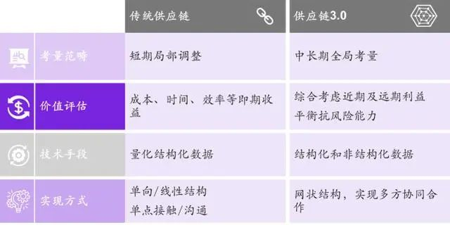
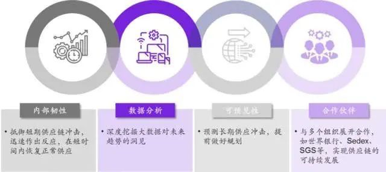

不惑创投李祝捷：短期红利改变不了一家企业的生死
原文链接 备份链接 燃财经（ID:rancaijing）原创 作者 | 闫丽娇 编辑 | 周昶帆 疫情之下，生鲜电商迎来了风口。订单激增、拉新显著、毛利润提升，时常处于补货状态。一部分长期亏损的生鲜企业，也借助此次契机，扭亏为盈。 生鲜电 …

大多数企业领导考虑是如何通过供应链的柔性来降本增效、缩短交付周期。但面对不确定风险时，如果只考虑柔性而忽视韧性，供应链就会出现“一冲即断，断后难复”的现象

刘晓明 叶楠 | 文
牛津研究院预测，新冠疫情冲击将导致2020年全球经济增长减少0.2个百分点，年增速跌至2.3%，这将是2008年金融危机以来的最低增速。
在中国，除了餐饮、旅游等与百姓日常生活息息相关的第三产业遭受重创以外，众多制造业企业也受到很大冲击。而且疫情对制造业的冲击深度和持续的时间要远远长于服务业，这意味着制造业蒙受的损失将更为严重。科尔尼预计，此次疫情对中国今年一季度的国内制造业增加值将产生至少5000亿元的负面影响。以汽车业为例，IHS预测，受低迷的消费端和困难重重的供应端双面夹击，中国2020年一季度新车销售同比下降将超过25%。
更为重要的是，中国作为“世界工厂”，疫情对中国经济和企业的严重影响已经传递到世界各地，比如电子行业、汽车行业，甚至于游戏行业。韩国现代汽车和意大利菲亚特汽车更是因为零件供应中断，导致部分在中国地区之外的工厂和生产线停产；美国苹果公司已经宣布因受新型冠状病毒疫情影响，由于中国生产的芯片供应受阻，预计无法达成本季度的销售目标；而在大洋彼岸的游戏巨头任天堂旗下的热销产品Switch也因零部件短缺即将面临全球断货。
虽然疫情还没有结束，但中国以及世界其他国家的企业已经为应对这一突发事件付出了巨大代价，各产业的供应链都遭受了巨大冲击。我们这些冲击产生的后果有些可以快速修复，但有些将无法修复，甚至影响未来的产业格局。
如果将应对新冠疫情看作是对制造业企业供应链的一场突击考试的话，那么企业领导者对自身企业的表现是否满意？企业在供应链管理方面还有哪些弱点？企业应如何调整供应链来更有效的应对未来类似的突发事件？
应对危机的关键：供应链韧性
疫情当前，各企业纷纷采取应急措施或者临时措施来努力维持供应链的稳定性，即保供。为了确保供应，很多企业付出了巨大的代价，但从目前来看，很多企业的应对效果并不尽如人意。这当然有外部环境的原因，比如政府强制规定的交通临时管制、生产临时管制等等。但总体来看，企业的供应链表现还是有很大的可以提升的空间。以汽车制造业为例，目前在全国整车生产基地中有约50%已经复工，但其中的产能利用率普遍较低，平均只有50% - 60%。即使有些企业确保了供应链不中断和较高的产能利用率，但那也是已极其高昂的成本来实现的，比如利用空运零件来保持整车生产，这其实会大大的降低企业的盈利，从而削弱了保供的经济意义。
为什么会造成这种被动局面？
造成这一局面的原因有很多，我们认为其中一个很重要的原因是企业供应链只有柔性而缺乏韧性。目前，大多数企业领导者都规划或者建设了柔性供应链，但迫于眼前的竞争压力，他们更多的是考虑如何通过供应链的柔性来降本增效，或者缩短交付周期。对不可预测、不确定的风险消解或应急管理方面的考虑远远不够。即他们只考虑了供应链的柔性，而忽视了供应链的韧性，从而出现“一冲即断，断后难复”的现象。新冠疫情如同一面镜子，清楚的让企业了解到自身供应链在规划与管理上的弱点和盲点。
在日益复杂、动荡和不可预测的大环境下，不确定性及易变性已成为企业经营所处的新常态，自然灾害、政局变动、技术突破等各类黑天鹅或灰犀牛事件势必会以更高的频率和强度出现，扰乱制造业既定的供应体系。例如中美贸易战争，地缘政治导致的国家间冲突，环境变暖带来的极端天气频现等等。因此，我们认为类似新冠疫情这种突发事件未来大概率还会有，而且对企业供应体系造成的影响可能更大、更广、更深。
那么疫情过后，企业在供应链规划与管理上应该如何应对呢？
科尔尼认为：企业应认真审视和深入思考自身供应链的中长期战略规划，重构供应链危机应对体系，而这一体系的关键点就是强化供应链的韧度。这一点对于已经和将要进行全球业务拓展的中国领先企业来说尤为重要。如现在未引起足够重视，那未来很有可能会损失惨重，甚至一蹶不振。
企业亟需建设供应链3.0
科尔尼认为，供应链的韧性是供应链3.0的典型特征之一。供应链1.0的典型特征是封闭的、单向分段式，其主要是为企业解决基本货物的供给问题；供应链2.0以IT技术为支撑，具备集成化和链条式的主要特征，其主要是为企业解决降本增效的问题；而供应链3.0则是在全球化和新技术进入到一个新阶段的时代背景下，为企业解决效率、稳健、成本、风控兼顾的问题，使其具备面对不确定性时的缓冲、快速应对及适应的能力。
从供应链2.0向供应链3.0进化，既是企业重塑体系竞争力的新机会，也是企业管理者必须面临的一个巨大挑战。从应对新冠疫情过程的表现来看，企业需要重新思考如何进行供应链转型。
在综合考虑的供应链3.0要帮助企业实现的目标和所处的运营背景之后，科尔尼认为，一个健全的供应链3.0应该具备Reliable（强固）, Resilient（韧度）, Risk-proof（抗风险），Responsive（敏捷）四个特性。即一个以数字化为基础的智能化技术手段赋能的多层次网状供应链，引入风险平衡机制，以柔性工作流在多种运营模式之间灵活切换，实现高效、低成本与稳健并存的供应体系。
面对风险以及突发事件，企业能变被动应对为主动防御，从而将竞争对手眼中的危险视为自己的机会。具备4R框架的供应链意味着企业具备综合性的解决方案，涵盖从战略、运营、技术，到组织多个层面的规划与布局，实现供应链效率、强度和韧度的最佳组合。
供应链3.0与传统供应链相比具有4方面差异，主要体现在考量范畴、价值评估、技术手段及实现方式等方面，将更好地助力企业在变化莫测的新时代敏捷从容地应对挑战，实现可持续发展。
表1. 供应链3.0与传统供应链的主要差异总结

如何定量管理供应链的韧性
企业在构建供应链3.0体系时，除了要确保高效及时、质量可靠、低成本以外，还要将供应链的韧度提到战略关注的层面上来。只有这样，才能确保企业在不同运营场景下都实现在高效和稳健模式之间无缝切换，灵活应对不同场景的不同要求，尤其是在疫情爆发或其他外部突发事件发生时。
例如家乐氏公司战略性地从内部韧性、可预见性、数据分析以及合作伙伴等四个方面全面提升其供应链的抗风险能力，其中尤其强调短期韧性对非常时期供应链维稳的重要性。此次疫情发生后非常短的时间内，家乐氏主要产品供应体系就强势恢复稳定水平，不仅可以满足日常销售所需，更能为奋战疫情一线医务和后勤保障人员捐赠13吨家乐氏麦片，可供2000人食用130天。
图1. 家乐氏供应链转型战略

家乐氏对各类不确定性的从容甚至超常应对正是来自于其日复一日地对其自身供应链韧度的锻造。我们建议领先企业在面向未来更加不确定的经营环境下，应借鉴家乐氏成功经验，将增强供应链韧度提升到企业战略地位，并通过量化指标来系统地评价、追踪、进而持续提升供应链韧度。通过在日常业务管理过程中不断强化供应链的韧度，从而实现企业在应对突发事件的时候能够展现出比其他企业更强的应对能力，确保业务的稳健和连续性。
科尔尼供应链韧度测试工具KRT（Kearney Resilience Test）。该工具是从企业内外部环境出发，通过定量诊断、提前预防、实时追踪、精准应对，为供应链各个职能环节提供精准的施力点。
具体而言，KRT的评测将从强度、弹性及耦合性三方面进行，通过具体的量化指标综合判断企业对产业链冲击、市场需求冲击及外部突发事件冲击等各类危机事件的应对能力，从而了解企业供应链整体韧度水平。
表2. KRT工具：

找到最适合自己的解决之道
虽然企业在战略层面进行了统筹规划，但是我们的经验表明，企业还需在运营实践中反复摸索，才能找到最适合自身的运营举措。基于我们过往研究和项目经验积累，我们通过案例列举一些有效的潜在方案供企业参考。
采购：通常面对严重的突发事件，某一区域的交通网络都会被进行特殊管控，这势必使提高企业断供的风险，尤其是针对独家供应商或供应商高度集中的情况。为了解决这一问题，企业的采购策略可以适当调整，通过系统和全面的评估突发事件的应对补充与供应链的成本机制，由集中供应转化为集中主力供应与网络备份供应分散共存的模式。如一家企业有多个相同零件的供应商，那么就可以大大增强供应链的韧度，在出现紧急状况的时候在最短的时间内回复正常供货水平。
例如，丰田汽车就非常注意维持多元供应商的局面，以控制燃料喷射的ECU为例，1992年丰田对电装公司的依赖度是75%，到2007年只有43%；而ABS的ECU，对电装公司的依赖从1992年的64%下降到了2007年的1.7%。这使得丰田汽车在某一供应商出现货物短缺的时候能迅速通过其他供应商填补缺口，确保零件供应水平。
研发：在研发环节，企业可以通过增加零部件通用性以及降低对线下研发活动的依赖来提升供应链的韧度。一方面，增加模块化和零部件的通用性，可使企业降低库存、提升生产灵活度，从而在突发事件来临时更容易集中调配资源实现供应链备份。
例如，康佳电器在产品设计环节就强调标准化和通用化。康佳在电视机制式的设计上力求最大的兼容性，一种产品力求可以覆盖更多地区的制式要求，如某个系列数字电视不但可以满足澳大利亚的需求，也可以满足中东、亚太市场的需求，这样的兼容性就保证了在某一地区出现紧急情况时可立即调配另一地区的库存进行支援。
另一方面，企业降低对线下研发活动的依赖可提高其对突发事件的抵御能力。在数字化和云技术的时代下，企业可以将更多的产品功能由软件而非硬件实现、应用云技术使不同地区团队无缝衔接、或应用数字化技术提升对产品研发和制造过程仿真程度。
生产：企业可以通过柔性化生产能力，在品质、交期、成本保持一致的条件下，实现生产线在不同批量、终端产品之间高自由度切换。柔性化生产使得企业在常规时期可以满足下游市场的多样化需求，而在非常时期则可以抵御供应链波动，随时根据市场实际需求变化弹性释放产能，并实现不同生产基地之间的互补互助，这对企业强化供应链的韧度是非常有效的手段之一。
例如，TCL电子在墨西哥、巴西、越南、波兰、印度等国设有工厂，海外产能布局达1,500万台/年，其柔性生产可在不同地区生产其他国家或地区所需的不同产品，在疫情期间，当国内生产基地暂时停工的情况下，TCL依靠其全球产能布局保障供应，公司业务按需正常开展。
物流：企业可以储备多种不同的物流资源，如空运、海运、快递、零担等之间的替换使用，并增加具有相应资源的平台性供应商储备，如海运领域的Flexport、Freighthub，陆运领域的满帮、Uber Fright、CH Robinson，以及市内运输的快狗、货拉拉等。在此基础之上，企业还应加强不同配送信息系统交互能力，以便在危机来临时能进行顺畅快捷的信息交换，实现系统之间无缝切换，从而在物流环节提升供应链韧度。
例如，此次疫情之下的沃尔玛，面临着物流受阻及配送量急剧上升的双重挑战。一方面，其重要的物流枢纽武汉被迫封城，另一方面，蔬菜等鲜食日配送量也超过了春节备货最高峰，是以往的3倍以上。依靠着丰富的物流资源及流畅的信息交换通路，迅速调整了原有的物流网络，让武汉的两个配送中心在疫情期间只负责湖北省内的门店配送，周边省份的门店则快速切换至其他配送中心供应。经过多方协调，在48小时内联通了40条省内的运输线路，保障黄冈、仙桃、咸宁、宜昌、孝感、黄石、荆州等地市的物资配送。这充分展现了一个高韧度供应体系的卓越性和竞争力。
计划：在考虑供需平衡的前提下，企业可以重新审视评估库存管理，做到在突发事件时，也能保障供应链充足可控，实现高韧度供给。企业可在日常供货环节会设立三道防线。需求预测是第一道堤坝，适用于普通的周转库存，目标是把大部分洪水给拦住。如果遇到预测失败，溢出部分则留给第二道堤坝，由安全库存来应对；安全库存对付不了的，则由第三道防线——供应链执行来补救。除此之外，企业可以通过设置战略库存应对破坏性的供应中断。战略库存是在供应链的某一个或几个节点对某些关键的产品或部件进行储备。战略库存是针对大规模突发事件，为多个供应链伙伴、或某一区域的多个运营点所共享。战略库存不同于传统的安全库存，只有当较大规模的供应中断发生时，它才能被用来维持生产正常进行，而不是被用于补充随机波动造成的产品或部件缺口。
例如，华工科技身处此次疫情重灾区，但是它在年前就做好了充分的储备。华工科技与大客户共建有VMI仓和HuB仓，在深圳有近2亿库存，可以保证客户一个月左右的供应量，有效保障了交付，使大客户订单交付未受影响。
智能化技术不可少
锻造高韧度的供应链少不了技术层面的支撑，企业应从数字化和智能化两个维度提升供应链的科技含量。
供应链整体的数字化程度对其在应急时刻的及时响应与调度至关重要。未来企业应大力建设数字化供应链平台，让供应链在任何情境下都具备即时、可视、可感知、可调节的能力。一方面，企业需要把线下的、物理的供应链要素数据化、线上化，确保供应链的可视化；另一方面，企业还需建立集成化的供应链控制塔，汇聚关键信息，处理关键数据，发起关键决策并展示关键绩效，实现供应链的可感知和可调节能力的构建。
在突发事件发生期间，劳动力通常较为紧张，而且在紧张关头，人为失误出现的可能性会比平时更高。因此，基于无人化少人化的供应链体系将具备显著优势，这促使企业积极探索和布局智能化技术和解决方案。我们过往的经验表明，企业供应链智能化技术的应用没有最好的方案，只有最适合的方案。因为每个企业的经营现状和目标都不一样，所以只有企业根据战略规划目标、自身资源禀赋和竞争需要综合考虑，才能找到最适合自己的智能化技术方案。
组织保障与数字化能力
企业任何业务的最终实现都离不开人，无论是直接参与还是间接管控，供应链业务也不例外。因此，企业在供应链组织结构及人员设置方面要充分考虑面向供应链整体匹配相应的资源，以确保供应链战略的实现。
组织结构：通常，企业需重塑其组织架构才能配合多层次供应链网络的顺利实施。企业需要设立多极化、多元化的供应链组织架构，核心部门负责公司总体战略和整体事务；各分支机构与核心部门相互依赖及相互补充。为实现柔性与稳定性的平衡，企业还可根据形势设立临时项目组或多功能团队来应对突发问题。
人员设置：在数字化及智能化技术全面和深入推广的大背景下，供应链上的传统人工运营岗位将逐渐减少，转而会有大量对应数字化/智能化供应链架构岗位的出现。企业应确保这些人员具备数字化/智能化供应链的相关技能，了解整体供应链生态系统的运作规律，能熟练使用各种数字化/智能化供应设备和装备，能够借助大数据、区块链等驱动和构建供应链的自动监控、自动反馈和自动处理体系，并具备一定的危机处理能力。
从优秀应对到持续卓越
新冠疫情不仅打乱人们的日常生活，也同样扰乱了制造业现有的供应链秩序。以传统思维打造的供应链虽然有一定的柔性应对方案，但由于缺乏韧度，所以在抵御十分严重的突发事件上暴露了明显不足，从而使企业的运营和业务遭受重创。面对未来更趋复杂多变的运营环境，也许不是一只黑天鹅而是成群的黑天鹅频繁降临，企业亟需借此契机深入思考自身供应链的转型方向和突破点。企业只有不断进行管理演习，通过发现、完善、提高、再发现的过程，才能打造一个足可以“以变应变“的高韧度供应体系，从而更自信、更从容地面对不确定性，并且实现持续的卓越发展。
作者为科尔尼管理咨询公司大中华区合伙人 ，科尔尼公司咨询顾问李宸对本文亦有贡献；编辑：马克

▲点击图片查看更多疫情报道
责编 | 黄端 duanhuang@caijing.com.cn
本文为《财经》杂志原创文章，未经授权不得转载或建立镜像。如需转载，请在文末留言申请并获取授权。
原文链接 备份链接 燃财经（ID:rancaijing）原创 作者 | 闫丽娇 编辑 | 周昶帆 疫情之下，生鲜电商迎来了风口。订单激增、拉新显著、毛利润提升，时常处于补货状态。一部分长期亏损的生鲜企业，也借助此次契机，扭亏为盈。 生鲜电 …
原文链接 备份链接 _ 疫情首先冲击劳动密集型的电子组装制造工厂，引发供应链上的各种连锁反应，可能在短期内延缓中国电子信息制造产业飞奔的脚步，政府、行业协会和企业应需要多种形式的互助和自救 _ 文 |《财经》记者 周源 陈潇潇 编辑 | …
原文链接 备份链接 你已选中了添加链接的内容 28.02.2020本文字数：2336，阅读时长大约4分钟 导读：压力大的是，员工的工资、社保开支，物流成本也高涨，另外，医用防护服的辅料即将用尽，但上游企业复工率尚低，难以采购。 作者 | …
原文链接 备份链接 参与中国欧盟商会与中国德国商会调研的577家企业中，大约一半预计2020年上半年营收会下跌超过10%，四分之一预计营收下滑超过20%。有46%的企业预计2020年的经营业绩将不及预期， …
原文链接 备份链接 图片来源：视觉中国 记者：侯瑞宁 编辑：张慧 “ 随着新冠肺炎疫情在全球范围相继爆发，给国际石油市场带来了新的不确定性。 ” 加油站老板甄荣的苦闷终于缓解了一些。 “昨天，加油站的汽油销售量开始上升了。”2月23日，甄 …